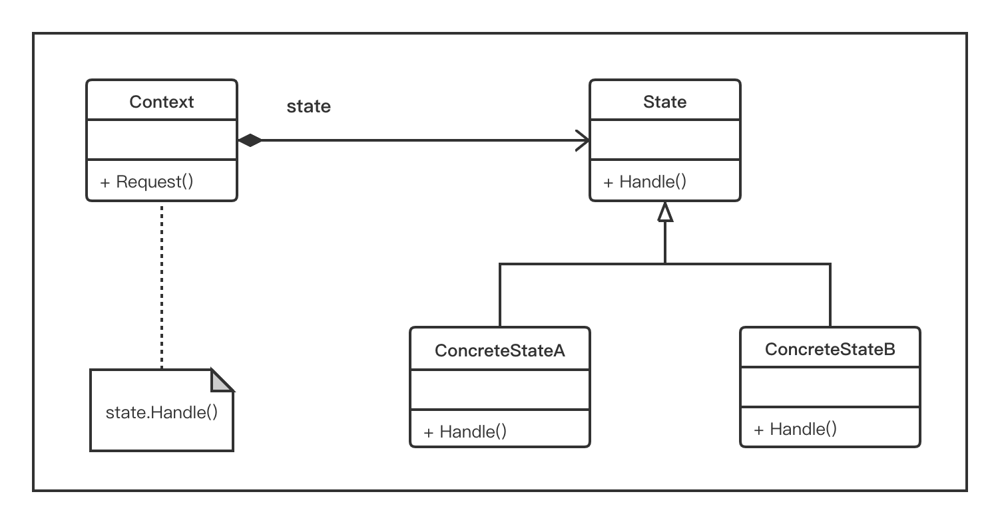

10.1 定义状态设计模式
行为模式关注的是对象的响应性。它们通过对象之间的交互以实现更强大的功能。状态设计模式是一种行为设计模式，有时也被称为状态模式的对象。在此模式中是，一个对象可以基于其内部状态封装多个行为。状态模式也可以看做是在运行时改变对象行为的一种方式。
下面，我们以收音机为例进行说明。收音机具有 AM/FM（切换开关）两种调频方式和一个扫描按钮，该按钮可扫描多个AM/FM频道。当用户打开无线电时，收音机的基本状态已经设计设置好了（例如，它被设置为FM）。通过单击扫描按钮，可以将收音机调谐到多个有效的FM频率或频道。然后，当基本状态改为AM时，扫描按钮则会帮助用户调谐到多个AM频道。因此，根据收音机的基本状态（AM/FM），当调谐到AM或FM频道时，扫描按钮的行为就会动态地改变。
因此，状态模式允许对象在其内部状态变化时改变其行为状态。这看起来就像对象本身已经改变了它的类一样。状态设计模式常用于开发有限状态机，并帮助协调状态处理操作。
10.1.1 理解状态设计模式
状态设计模式在3个主要参与者的协助下工作。
State：这被认为是封装对象行为的接口。这个行为与对象的状态相关联；ConcreteState：这是实现State接口的子类。ConcreteState实现与对象的特定状态相关联的实际行为;Context：这定义了客户感兴趣的接口。Context还维护一个ConcreteState子类的实例，该子类在内部定义了对象的特定状态的实现。
下面我们来考察带有上述3个参与者的状态设计模式的结构代码实现。在这个代码实现中，我们定义了一个具有Handle()抽象方法的状态接口。ConcreteState类，ConcreteStateA和ConcreteStateB用于实现状态接口，同时，定义的Handle()方法是特定于ConcreteState类。因此，当Context类被设置为一个状态时，该状态的Concrete类的Handle()方法就会被调用。在以下示例中，由于Context设置为stateA，因此将调用ConcreteStateA.Handle()方法并打印ConcreteStateA：
# -*- coding:utf-8 -*-
from abc import abstractmethod, ABCMeta
class State(metaclass=ABCMeta):
@abstractmethod
def Handle(self):
pass
class ConcreteStateB(State):
def Handle(self):
print("ConcreteStateB")
class ConcreteStateA(State):
def Handle(self):
print("ConcreteStateA")
class Context(State):
def __init__(self):
self.state = None
def getState(self):
return self.state
def setState(self, state):
self.state = state
def Handle(self):
self.state.Handle()
if __name__ == '__main__':
context = Context()
stateA = ConcreteStateA()
stateB = ConcreteStateB()
context.setState(stateA)
context.Handle()
我们将看到图10-1所示的输出。

10.1.2 通过UML图理解状态设计模式
正如我们在上一节中看到的那样，在UML图中有3个主要参与者：State、ConcreteState和Context。在本节中，我们将利用UML类图来展示它们，如图10-2所示。
首先，让我们详细了解一下UML图的组成元素。
State：这是一个定义了Handle()抽象方法的接口。Handle()方法需要通过ConcreteState类来实现；
图 10-2ConcreteState：在这个UML图中，我们定义了两个Concrete类：ConcreteStateA和ConcreteStateB。它们都实现了Handle()方法，并可以根据状态的变化定义要采取的实际动作；Context：这是一个接受客户端请求的类。它还维护着对象的当前状态的引用。这样，就可以根据相应的请求，来调用具体的行为了。